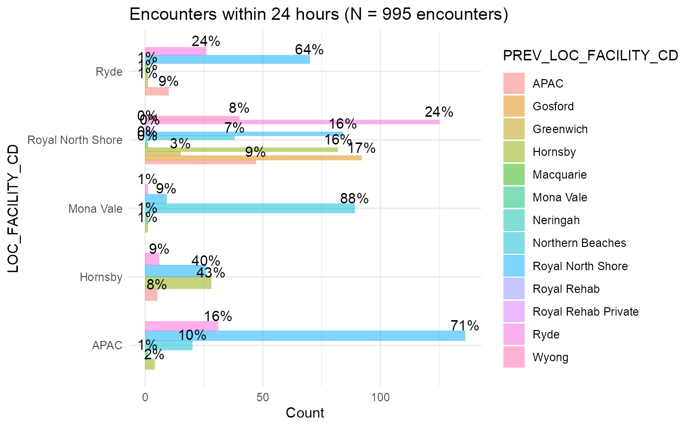
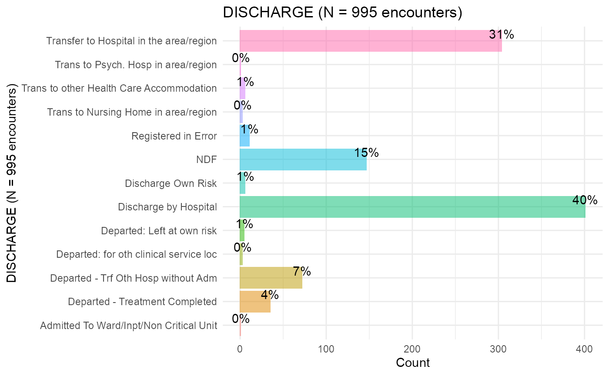
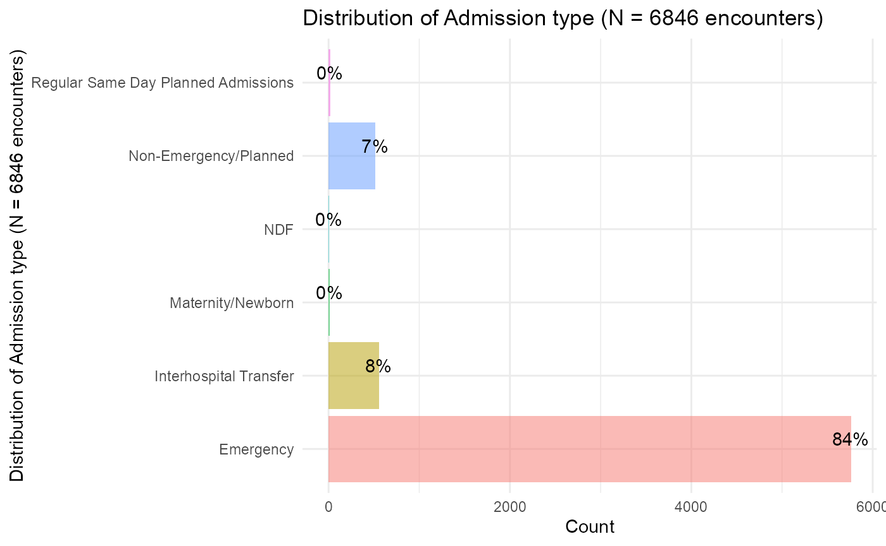
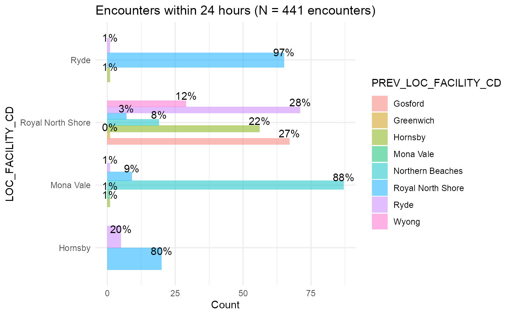

test.Rmd
library(magrittr)
library(targets)
library(tidyverse)
library(kableExtra)
library(ggplot2)
library(ggpubr)
library(acs)
library(flextable)
library(hefd)
source('R/plot_utils.R')
hf_inpatient_enrolment <- load_data("HF_INPATIENT_ENROLMENT")
hf_inpatient_encntr <- load_data("HF_INPATIENT_ENCNTR")
query <- "select x.*,y.LOC_FACILITY_CD,z.LOC_FACILITY_CD as PREV_LOC_FACILITY_CD,k.LOC_FACILITY_CD as ENCNTR_HIS_LOC_FACILITY_CD,z.DISCH_DISPOSITION_CD as PREV_DISCH_DISPOSITION_CD,k.DISCH_DISPOSITION_CD as ENCNTR_HIS_DISCH_DISPOSITION_CD from HF_INPATIENT_ENCNTR_HIS as x
left join encounter as y
on x.encntr_id = y.encntr_id
left join encounter as z
on x.PREV_ENCNTR_ID = z.encntr_id
left join encounter_history as k
on x.PREV_ENCNTR_ID = k.encntr_id;"
df <- execute_query(query) %>%
dplyr::mutate(PREV_LOC_FACILITY_CD =
dplyr::case_when(
is.na(PREV_LOC_FACILITY_CD) & !is.na(ENCNTR_HIS_LOC_FACILITY_CD)~ ENCNTR_HIS_LOC_FACILITY_CD,
TRUE ~ PREV_LOC_FACILITY_CD)) %>%
dplyr::mutate(
PREV_DISCH_DISPOSITION_CD =
dplyr::case_when(
is.na(PREV_DISCH_DISPOSITION_CD) & !is.na(ENCNTR_HIS_DISCH_DISPOSITION_CD)~ ENCNTR_HIS_DISCH_DISPOSITION_CD,
TRUE ~ PREV_DISCH_DISPOSITION_CD)) %>%
dplyr::select(-ENCNTR_HIS_LOC_FACILITY_CD,-ENCNTR_HIS_DISCH_DISPOSITION_CD)
df %>%
dplyr::mutate(ENCNTR_DELTA_DAYS = ENCNTR_DELTA/24) %>%
plot_histogram("ENCNTR_DELTA_DAYS","Distribution of time between previous encounter") +
xlim(0,30)
df %>%
dplyr::summarise(TRANSFER_24 = sum(as.numeric(ENCNTR_DELTA < 24),na.rm =TRUE)/dplyr::n()*100,
TRANSFER_48 = sum(as.numeric(ENCNTR_DELTA < 48),na.rm =TRUE)/dplyr::n()*100,
TRANSFER_72 = sum(as.numeric(ENCNTR_DELTA < 72),na.rm =TRUE)/dplyr::n()*100) %>%
knitr::kable()| TRANSFER_24 | TRANSFER_48 | TRANSFER_72 |
|---|---|---|
| 14.53828 | 15.97019 | 17.12449 |
df %>%
dplyr::filter(ENCNTR_DELTA < 24) %>%
conditional_bar_plot("LOC_FACILITY_CD","PREV_LOC_FACILITY_CD","Encounters within 24 hours","encounters") + coord_flip()
df %>%
dplyr::filter(ENCNTR_DELTA < 24) %>%
proportion_bar_plot("PREV_DISCH_DISPOSITION_CD","DISCHARGE","encounters") + coord_flip()
query <- "with comb as (
select encntr_id,ADMIT_TYPE_CD,LOC_FACILITY_CD,BEG_EFFECTIVE_DT_TM,DISCH_DT_TM from encounter
union all
select encntr_id,ADMIT_TYPE_CD,LOC_FACILITY_CD,BEG_EFFECTIVE_DT_TM,DISCH_DT_TM from encounter_history
)
select x.*, y.ADMIT_TYPE_CD, y.LOC_FACILITY_CD,z.ADMIT_TYPE_CD as PREV_ADMIT_TYPE_CD,
z.LOC_FACILITY_CD as PREV_LOC_FACILITY_CD, y.BEG_EFFECTIVE_DT_TM,Z.DISCH_DT_TM AS PREV_DISCH_DT_TM
from HF_INPATIENT_ENCNTR_HIS as x
left join comb as y
on x.encntr_id = y.encntr_id
left join comb as z
on x.prev_encntr_id = z.encntr_id
"
df <- execute_query(query)
df %>% proportion_bar_plot("ADMIT_TYPE_CD","Distribution of Admission type","encounters") + coord_flip()
temp <- df %>%
dplyr::filter(ADMIT_TYPE_CD == 'Interhospital Transfer')
temp %>%
plot_histogram("ENCNTR_DELTA","Distribution of time since previous encounter for interhospital")
test <- temp %>%
dplyr::filter(ENCNTR_DELTA > 48)
temp %>%
dplyr::filter(ENCNTR_DELTA < 24) %>%
conditional_bar_plot("LOC_FACILITY_CD","PREV_LOC_FACILITY_CD","Encounters within 24 hours","encounters") + coord_flip()
table(df$ENCNTR_DELTA <=24,df$ADMIT_TYPE_CD=='Interhospital Transfer') %>%
knitr::kable(caption = "Contigency table of ENCNTR DELTA and Interhospital transfer.",digits=2) %>%
kableExtra::add_header_above(c("Prev. ENCNTR <= 24"=1,"Interhospital"=2))%>%
kable_styling(position = "center",full_width = FALSE)| FALSE | TRUE | |
|---|---|---|
| FALSE | 4686 | 63 |
| TRUE | 562 | 443 |
transfers <- df %>%
dplyr::filter((ENCNTR_DELTA < 24 | ADMIT_TYPE_CD=='Interhospital Transfer'))
prev_enc <- df %>%
dplyr::filter(ENCNTR_ID %in% transfers$PREV_ENCNTR_ID)
print(nrow(prev_enc)/nrow(df)*100)
#> [1] 5.302366
transfers <- df %>%
dplyr::filter((ENCNTR_DELTA < 24))
prev_enc <- df %>%
dplyr::filter(ENCNTR_ID %in% transfers$PREV_ENCNTR_ID)
print(nrow(prev_enc)/nrow(df)*100)
#> [1] 5.039439
transfers <- df %>%
dplyr::filter((ADMIT_TYPE_CD=='Interhospital Transfer'))
prev_enc <- df %>%
dplyr::filter(ENCNTR_ID %in% transfers$PREV_ENCNTR_ID)
print(nrow(prev_enc)/nrow(df)*100)
#> [1] 2.001169
df <- execute_query("with join_tab as (
select ENCNTR_ID,PERSON_ID,BEG_EFFECTIVE_DT_TM,DISCH_DT_TM,UPDT_DT_TM,ADMIT_TYPE_CD,ENCNTR_TYPE_CD,0 as HIS_ENCNTR from encounter
where ENCNTR_TYPE_CD in ('Inpatient','Emergency','NDF') and ADMIT_TYPE_CD IN ('Interhospital Transfer','Emergency','NDF') and LOC_FACILITY_CD != 'APAC'
union all
select ENCNTR_ID,PERSON_ID,BEG_EFFECTIVE_DT_TM,DISCH_DT_TM,UPDT_DT_TM,ADMIT_TYPE_CD,ENCNTR_TYPE_CD,1 as HIS_ENCNTR from encounter_history
where ENCNTR_TYPE_CD in ('Inpatient','Emergency','NDF') and ADMIT_TYPE_CD IN ('Interhospital Transfer','Emergency','NDF') and LOC_FACILITY_CD != 'APAC'
)
select ENCNTR_ID,PERSON_ID,BEG_EFFECTIVE_DT_TM,DISCH_DT_TM,UPDT_DT_TM,HIS_ENCNTR from join_tab
where PERSON_ID in (
select PX9_PERSON_ID FROM ENCOUNTER_REFERENCE WHERE
Q4_DIAGNOSIS = 1) and DISCH_DT_TM >= BEG_EFFECTIVE_DT_TM ")
# added_row_number as(
# SELECT *,
# ROW_NUMBER() OVER(PARTITION BY PERSON_ID ORDER BY BEG_EFFECTIVE_DT_TM asc) AS ENCNTR_ORDER
# from join_tab
# )
# select top(1000) k.*,y.ENCNTR_ID AS PREV_ENCNTR_ID,y.BEG_EFFECTIVE_DT_TM AS PREV_BEG_EFFECTIVE_DT_TM, y.DISCH_DT_TM AS PREV_DISCH_DT_TM,y.ADMIT_TYPE_CD as PREV_ADMIT_TYPE_CD, y.ENCNTR_TYPE_CD as PREV_ENCNTR_TYPE_CD,datediff(hour,y.DISCH_DT_TM,k.BEG_EFFECTIVE_DT_TM) AS ENCNTR_DELTA from added_row_number as k
# left join added_row_number as y
# on k.ENCNTR_ORDER = y.ENCNTR_ORDER + 1 and k.person_id = y.person_id
# where k.DISCH_DT_TM > k.BEG_EFFECTIVE_DT_TM
# order by k.PERSON_ID,K.ENCNTR_ORDER
.dots <- rlang::exprs(
person_key = PERSON_ID,
encntr_key = ENCNTR_ID,
journey_key = JOURNEY_ID,
admit_dttm = BEG_EFFECTIVE_DT_TM,
discharge_dttm = DISCH_DT_TM,
journey_start = JOURNEY_START_DT_TM,
journey_end = JOURNEY_END_DT_TM,
journey_day = JOURNEY_DAYS,
encntr_key_end = ENCNTR_ID_END
)
temp <- df %>%
link_encounters_by_timestamps(.default_dots = .dots)
journeys <- temp %>%
create_journey_table(.default_dots = .dots)